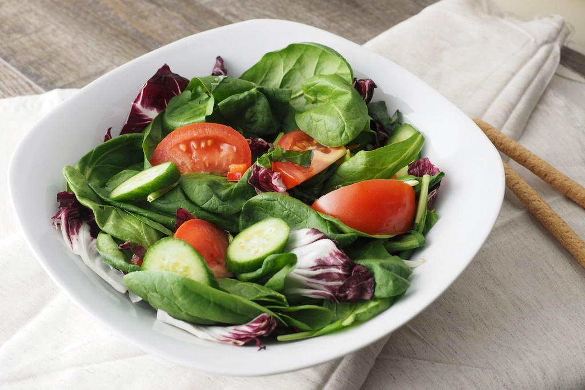
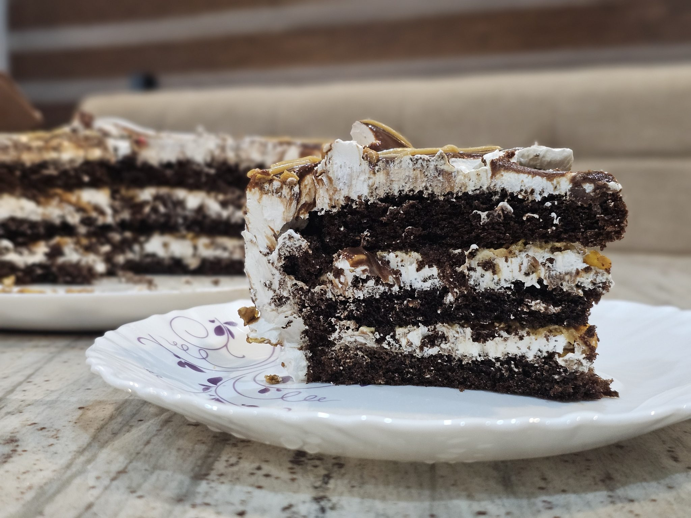

メニューの詳細は現在確認中です。おおよそのジャンルをご紹介しますので、当日の食事選びの参考にしていただければと思います。詳しい品目・価格は貴店にご確認のうえ、正式サイトに反映いたします。

野菜やハーブなど、季節の素材を生かした前菜の数々。食事の始まりを軽やかに彩る一皿をご用意しています。
肉料理、魚料理ともに、素材の味わいを大切にした洋風の一皿をご用意しています。食事の主役として、しっかりと満足感のある内容を心がけています。

食後のひとときを楽しんでいただけるデザートと、お食事に合わせたドリンクをご用意しています。最後まで心地よい時間をお過ごしいただけるよう努めています。
価格帯は現在確認中です。正式サイトでは最新の価格をご案内します。